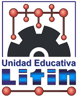
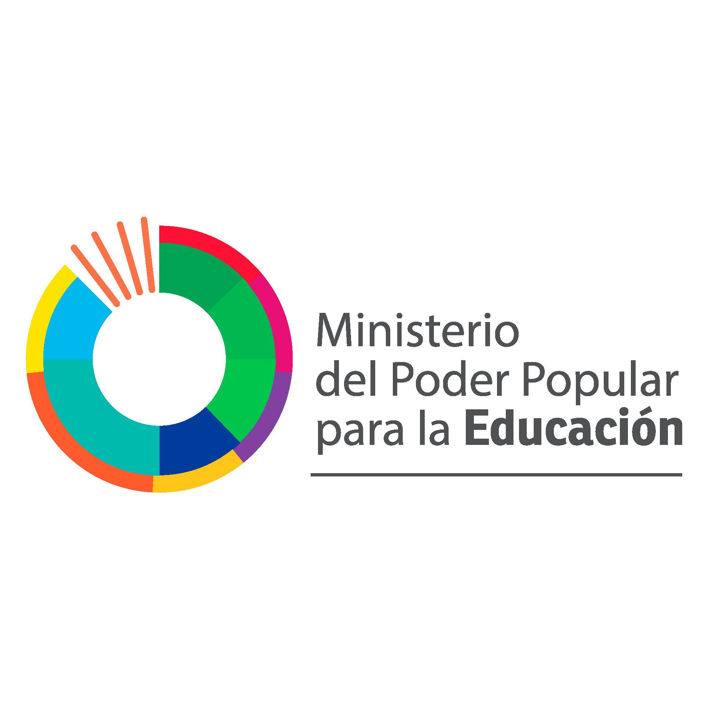

Squad CodeGenius

Abel Ghanam
CEO & Fundador

Hiday Garcia
Estratega de inversiones

Ricardo Marin
CEO Piensa Rápido

Paola Hernandez
Directora Creativa

Luis Noguera
Noguera Films
Desciende hacia la tesis


Scroll
Squad CodeGenius
CEO & Fundador
Estratega de inversiones
CEO Piensa Rápido
Directora Creativa
Noguera Films
Desciende hacia la tesis
El Conocimiento
Node.01 // Origen
La inteligencia biológica es la base de todo progreso. Su motor principal es la plasticidad sináptica, permitiéndonos no solo procesar información, sino otorgarle un peso emocional y moral.
A diferencia de los modelos estáticos, el cerebro humano utiliza el razonamiento abductivo para generar soluciones creativas a partir de datos incompletos.
IA Classification // Capabilities
No toda la Inteligencia Artificial es igual. Cada variante aporta una capacidad única al ecosistema educativo.
Capacidad de crear contenido original (texto, código, imágenes) a partir de instrucciones.
Co-creación de materiales, resúmenes personalizados y generación de casos de estudio únicos para cada alumno.
Análisis de patrones históricos para anticipar resultados o comportamientos futuros.
Identificación temprana de riesgo de deserción y predicción de áreas donde el alumno necesitará refuerzo.
Sistemas diseñados para el procesamiento del lenguaje natural en diálogos complejos.
Tutores socráticos 24/7 que guían al estudiante mediante preguntas en lugar de dar respuestas directas.
Motores que modifican su estructura y contenido en tiempo real según la interacción.
Personalización masiva del currículo: la dificultad y el formato cambian según el ritmo de cada estudiante.
Node.02 // Expansión
La IA actúa como una extensión cognitiva. Su arquitectura de silicio permite la detección de patrones sutiles en petabytes de información en milisegundos.
Capacidad de análisis de Big Data inaccesible para la mente biológica.
Modelado de escenarios futuros basado en billones de variables históricas.
Node.03 // Gobernanza
La tecnología sin valores es ciega. La transición requiere una supervisión humana constante para evitar sesgos y asegurar la transparencia.
Sesgos de datos, falta de explicabilidad y pérdida de privacidad sistémica.
Alinear la inteligencia sintética con la dignidad y el bienestar colectivo.
Node.04 // Futuro
El aula evoluciona de un centro de transferencia a un hub de innovación asistida. La IA no dicta el conocimiento; personaliza el camino para que el humano lidere la creatividad.
Sistemas que ajustan la dificultad y el método en tiempo real según la respuesta del estudiante.
La IA actúa como tutor persistente, fomentando el pensamiento crítico mediante el diálogo.
Node.05 // Simulador
Identifica las afirmaciones falsas sobre IA. Toca las tarjetas rojas.